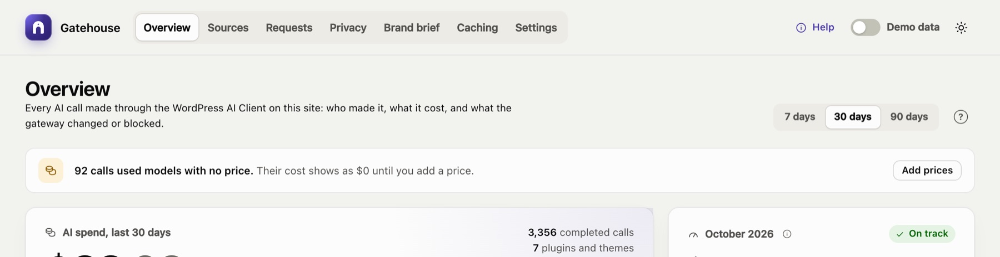

Troubleshooting
No AI calls appear#
The Overview says Waiting for the first AI call even though a plugin has used AI. Check these in order:
- Is an AI provider connected? Look for a banner at the top of the Overview, and check Settings → Connectors.
- Does the plugin use the WordPress AI Client? Gatehouse only sees calls made through it. Plugins that call a provider directly with their own API key are invisible to Gatehouse. Ask the plugin's developer whether it uses
wp_ai_client_prompt(). - Is AI turned off on the site? A banner says AI features are turned off on this site when the
WP_AI_SUPPORTconstant is set tofalse, or when another plugin uses thewp_supports_aifilter to disable AI. - Are you looking at the right period? Pick 30 days or 90 days at the top of the Overview.
A banner says the provider is not connected#

- "No AI provider is connected": install a provider plugin (for example AI Provider for Anthropic) and add its API key under Settings → Connectors.
- "… is installed but not connected": the provider plugin is installed, but no API key has been added. Add the key under Settings → Connectors.
Gatehouse only checks that a key is configured; it never calls the provider to test it. If plugins' calls fail even though a key is added, open a failed call in Requests: the provider's error (for example an invalid key or no credit) is shown there.
Calls are blocked with "Not approved in AI → Connector Approval"#
Your site uses the AI plugin's Connector Approval feature, which blocks each plugin until an administrator approves it.
- Go to Tools → Connector Approval. The Overview also shows a Review approvals button.
- Approve the plugin.
Gatehouse itself never needs approval. See Connector Approval.
A plugin's AI features have disappeared#
The plugin is probably blocked. On Sources, check its status:
- Not approved: if the Requests log says Not approved in AI → Connector Approval, approve the plugin under Tools → Connector Approval.
- Paused: open its Policy and turn off Pause AI.
- Budget reached: raise its monthly budget, or wait for the 1st of next month.
Also check the site-wide budget under Settings: when it is reached, every plugin is blocked. The Requests log, filtered by Blocked, shows the reason for each blocked call.
Costs show $0 or "n/a"#
The model has no price. See Models without a price.
Costs don't match my provider's invoice#
Gatehouse's costs are estimates. Common reasons for a difference:
- Your provider changed a price. Turn on automatic price updates (or click Update now), or edit the price under Settings → Model prices.
- Discounts: prompt caching, batch processing or a negotiated rate. Enter your effective price under Settings → Model prices.
- Calls Gatehouse can't see: plugins that call the provider directly, or other websites and apps using the same API key.
- Billing periods and timezones: your provider may bill in UTC; Gatehouse uses your site's timezone.
Automatic price updates fail#
Settings → Model prices shows the error under the switch. The last prices that downloaded successfully stay in use, so cost estimates keep working.
- "Could not … / timed out": your server can't reach
openrouter.ai. Some hosts block outgoing requests; ask your host to allow it, or turn automatic updates off and use the built-in prices. - "Empty or in an unexpected format": the price list changed format. Keep Gatehouse updated; the built-in prices are used as a fallback meanwhile.
Answers contain placeholders such as [EMAIL_1]#
Gatehouse puts real values back when the answer contains a placeholder exactly as sent. If a model changes a placeholder (for example to "EMAIL 1" or "email_1"), it can't be restored.
To fix it for one plugin, turn on Skip redaction in its policy on Sources. To check what a plugin is sending, temporarily turn on excerpts under Settings → Logging and open the call in Requests.
Something that isn't personal data was redacted#
- Numbers: the phone detector ignores dates, version numbers and decimals, but some codes formatted like phone numbers (for example
020 7946 0958) will still be replaced. If this affects a plugin, switch off Phone numbers under Privacy, or turn on Skip redaction for that plugin. - Custom terms match anywhere, ignoring case, including inside longer words. Make terms specific: "Falcon Project" rather than "Falcon".
Use the Try it box on the Privacy page to test any text.
I don't receive alert emails#
- Check Settings: Email alerts must be on and the address correct.
- Each alert is sent once per budget per month. If you already received the 80% email this month, you won't get it again.
- Check WordPress email itself: alerts use WordPress's normal email system. If other WordPress emails (such as password resets) also don't arrive, install an SMTP plugin to send mail through a proper email service.
The forecast looks too high or too low#
The forecast uses the last 7 days' average. A one-off spike, such as a bulk job that generated 500 product descriptions, raises the forecast for a week. Brand-new sources have little history, so their forecast moves a lot at first.
Old plugins still appear on Sources#
Sources stay listed while they have calls in the selected period, or a saved policy. They disappear once their calls age out of the period. If a deleted plugin had a policy, clear its budget and switches.
The Gatehouse page is blank or doesn't load#
- Reload the page. If it still fails, open your browser's developer console and look for errors.
- Check that the plugin files are complete. The
build/folder must exist. If you installed from source code rather than a release zip, runnpm install && npm run build. - Check security plugins and firewalls. The dashboard loads its data from the WordPress REST API (
/wp-json/gatehouse/v1/…). If a security plugin or firewall blocks the REST API for logged-in admins, the dashboard can't load. - Check your role. Only administrators can open Gatehouse.
Still stuck?#
When asking for help, include:
- your WordPress, PHP and Gatehouse versions;
- which AI provider plugin you use;
- what you expected and what happened;
- any error from Requests → request details or your browser console.
Still stuck? Check Troubleshooting and the FAQ, or ask on the support forum. Inside WordPress, click Help at the top right of Gatehouse.